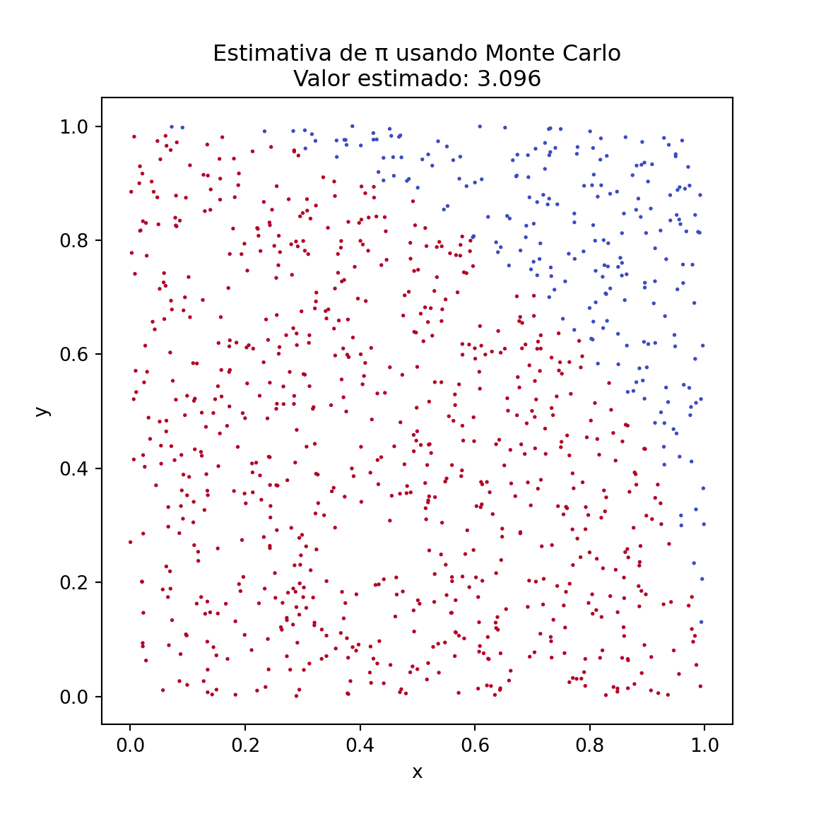
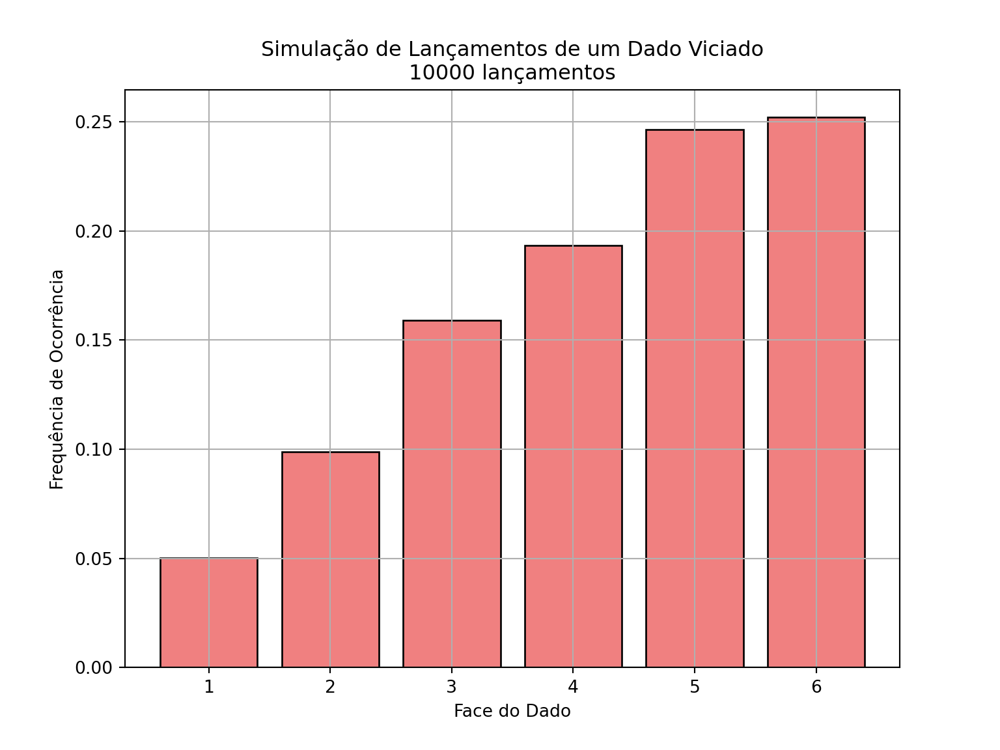

3Geração de Números Aleatórios e Aplicação em Estatística
3.1 Objetivo da Aula
Nesta aula, vamos introduzir o conceito de números pseudoaleatórios e como eles podem ser usados para resolver problemas estatísticos por meio de simulação. Vamos abordar a importância da aleatoriedade em estatísticas e em algoritmos de Monte Carlo.
3.2 Conteúdo Teórico
A geração de números aleatórios é essencial em várias áreas da estatística e da ciência de dados. Esses números são utilizados em simulações estocásticas, amostragem e para resolver problemas que envolvem incerteza. Contudo, em computadores, os números “aleatórios” gerados são na verdade pseudoaleatórios, pois seguem uma sequência previsível, gerada por um algoritmo determinístico.
Os números pseudoaleatórios são amplamente usados em algoritmos de Monte Carlo, que dependem da simulação repetida de processos aleatórios para estimar soluções para problemas matemáticos e estatísticos.
3.3 Exemplo de Problema
Vamos resolver o problema de estimar o valor de π (Pi) usando um método de Monte Carlo. A ideia é simular a área de um quarto de círculo inscrito em um quadrado. Gerando pontos aleatórios dentro do quadrado, podemos calcular a proporção desses pontos que também caem dentro do círculo e usar essa proporção para estimar o valor de Pi.
# Definindo o número de pontos a serem geradosn_pontos <-1000# Gerando pontos aleatórios (x, y) no intervalo [0, 1]x <-runif(n_pontos, 0, 1)y <-runif(n_pontos, 0, 1)# Calculando a distância de cada ponto à origemdistancia <-sqrt(x^2+ y^2)# Contando quantos pontos estão dentro do quarto de círculo (distância <= 1)dentro_circulo <- distancia <=1pi_estimado <-4*sum(dentro_circulo) / n_pontos# Exibindo o valor estimado de Picat("Valor estimado de π:", pi_estimado, "\n")
Valor estimado de π: 3.172
Mostrar código
# Visualizando a distribuição dos pontoslibrary(ggplot2)dados <-data.frame(x = x, y = y, dentro_circulo = dentro_circulo)ggplot(dados, aes(x = x, y = y, color = dentro_circulo)) +geom_point(size =1) +scale_color_manual(values =c("red", "blue")) +ggtitle(paste0("Estimativa de π usando Monte Carlo\nValor estimado: ", round(pi_estimado, 5))) +theme_minimal() +coord_equal() +labs(x ="x", y ="y")
Mostrar código
import numpy as npimport matplotlib.pyplot as plt# Definindo o número de pontos a serem geradosn_pontos =1000# Gerando pontos aleatórios (x, y) no intervalo [0, 1]x = np.random.uniform(0, 1, n_pontos)y = np.random.uniform(0, 1, n_pontos)# Calculando a distância de cada ponto à origemdistancia = np.sqrt(x**2+ y**2)# Contando quantos pontos estão dentro do quarto de círculo (distância <= 1)dentro_circulo = distancia <=1pi_estimado =4* np.sum(dentro_circulo) / n_pontos# Exibindo o valor estimado de Piprint(f"Valor estimado de π: {pi_estimado}")
Valor estimado de π: 3.096
Mostrar código
# Visualizando a distribuição dos pontosplt.figure(figsize=(6,6))plt.scatter(x, y, c=dentro_circulo, cmap='coolwarm', s=1)plt.title(f'Estimativa de π usando Monte Carlo\nValor estimado: {pi_estimado}')plt.xlabel('x')plt.ylabel('y')plt.show()

3.4 Exemplo: Simulação de um Jogo de Dados com Dado “Viciado”
Imagine que estamos jogando um jogo em que o dado é “viciado” e não segue uma distribuição uniforme, ou seja, alguns números têm uma chance maior de serem sorteados. Por exemplo, o número 6 pode ter uma probabilidade maior, e os outros números, menores.
Isso nos permite mostrar como alterar a probabilidade de ocorrência de eventos em uma distribuição discreta.
# Definindo as faces do dado e as probabilidadesfaces <-1:6probabilidades <-c(0.05, 0.1, 0.15, 0.2, 0.25, 0.25) # Probabilidades associadas às faces do dado# Verificando que a soma das probabilidades é 1cat("Soma das probabilidades:", sum(probabilidades), "\n")
Soma das probabilidades: 1
Mostrar código
# Simulando 10000 lançamentos de um dado viciadon_lancamentos <-10000set.seed(123) # Definindo seed para reprodutibilidaderesultados <-sample(faces, size = n_lancamentos, replace =TRUE, prob = probabilidades)# Contando as frequências de cada facefrequencias <-table(resultados) / n_lancamentos# Exibindo os resultados da simulaçãocat("Frequências de cada face após", n_lancamentos, "lançamentos:\n")
Frequências de cada face após 10000 lançamentos:
Mostrar código
for (face in faces) {cat("Face", face, ":", frequencias[as.character(face)], "vezes\n")}
Face 1 : 0.0473 vezes
Face 2 : 0.0975 vezes
Face 3 : 0.1504 vezes
Face 4 : 0.1991 vezes
Face 5 : 0.2582 vezes
Face 6 : 0.2475 vezes
Mostrar código
# Visualizando os resultados em um gráfico de barraslibrary(ggplot2)dados <-data.frame(faces =as.factor(faces), frequencias =as.numeric(frequencias))ggplot(dados, aes(x = faces, y = frequencias)) +geom_bar(stat ="identity", fill ="lightcoral", color ="black") +ggtitle(paste0("Simulação de Lançamentos de um Dado Viciado\n", n_lancamentos, " lançamentos")) +xlab("Face do Dado") +ylab("Frequência de Ocorrência") +theme_minimal() +geom_text(aes(label =round(frequencias, 4)), vjust =-0.5) +theme(panel.grid.major =element_line(color ="grey80"))
Mostrar código
import numpy as npimport matplotlib.pyplot as plt# Definindo as faces do dado e as probabilidadesfaces = [1, 2, 3, 4, 5, 6]probabilidades = [0.05, 0.1, 0.15, 0.2, 0.25, 0.25] # Probabilidades associadas às faces do dado# Verificando que a soma das probabilidades é 1print(f"Soma das probabilidades: {sum(probabilidades)}")
Soma das probabilidades: 1.0
Mostrar código
# Simulando 10000 lançamentos de um dado viciadon_lancamentos =10000resultados = np.random.choice(faces, size=n_lancamentos, p=probabilidades)# Contando as frequências de cada facefrequencias = [np.sum(resultados == face) / n_lancamentos for face in faces]# Exibindo os resultados da simulaçãoprint(f"Frequências de cada face após {n_lancamentos} lançamentos:")
Frequências de cada face após 10000 lançamentos:
Mostrar código
for face, freq inzip(faces, frequencias):print(f"Face {face}: {freq} vezes")
Face 1: 0.0503 vezes
Face 2: 0.0988 vezes
Face 3: 0.159 vezes
Face 4: 0.1934 vezes
Face 5: 0.2465 vezes
Face 6: 0.252 vezes
Mostrar código
# Visualizando os resultados em um gráfico de barrasplt.figure(figsize=(8,6))plt.bar(faces, frequencias, color='lightcoral', edgecolor='black')plt.title(f'Simulação de Lançamentos de um Dado Viciado\n{n_lancamentos} lançamentos')plt.xlabel('Face do Dado')plt.ylabel('Frequência de Ocorrência')plt.grid(True)plt.show()

3.5 Conseguimos repetir o experimento anterior utilizando apenas uma uniforme?
Podemos utilizar uma única distribuição uniforme para simular o lançamento de um dado viciado. Ao dividir o intervalo [0, 1] em partes proporcionais às probabilidades das faces do dado, podemos mapear cada número aleatório gerado a uma das faces, de acordo com o intervalo no qual o número cai. Abaixo está um exemplo de como realizar essa simulação.
# Definindo as faces do dado e as probabilidades associadas (não uniformes)faces <-1:6probabilidades <-c(0.05, 0.1, 0.15, 0.2, 0.25, 0.25) # Probabilidades associadas às faces do dado# Função para gerar uma amostra baseada em intervalos de probabilidadesgerar_amostra_por_intervalos <-function(probabilidades, faces) { u <-runif(1) # Gerando um número aleatório uniforme limite_inferior <-0# Limite inferior do intervalo# Percorrendo as probabilidades e verificando em qual intervalo o número caifor (i inseq_along(probabilidades)) { limite_superior <- limite_inferior + probabilidades[i] # Definindo o limite superior do intervaloif (limite_inferior <= u && u < limite_superior) {return(faces[i]) # Retorna a face correspondente ao intervalo } limite_inferior <- limite_superior # Atualiza o limite inferior para o próximo intervalo }}# Simulando lançamentos do dado viciado utilizando a verificação dos intervalosn_lancamentos <-10000set.seed(123) # Definindo seed para reprodutibilidaderesultados <-replicate(n_lancamentos, gerar_amostra_por_intervalos(probabilidades, faces))# Contando as frequências de cada facefrequencias <-sapply(faces, function(face) sum(resultados == face) / n_lancamentos)# Exibindo os resultados da simulaçãocat("Frequências de cada face após", n_lancamentos, "lançamentos:\n")
Frequências de cada face após 10000 lançamentos:
Mostrar código
for (i inseq_along(faces)) {cat("Face", faces[i], ":", frequencias[i], "vezes\n")}
Face 1 : 0.0521 vezes
Face 2 : 0.0964 vezes
Face 3 : 0.1527 vezes
Face 4 : 0.2045 vezes
Face 5 : 0.2508 vezes
Face 6 : 0.2435 vezes
Mostrar código
# Visualizando os resultados em gráficoslibrary(ggplot2)# Gráfico das probabilidades ajustadasdados_probabilidades <-data.frame(faces =as.factor(faces), probabilidades = probabilidades)ggplot(dados_probabilidades, aes(x = faces, y = probabilidades)) +geom_bar(stat ="identity", fill ="skyblue", color ="black") +ggtitle("Probabilidades Ajustadas para o Dado Viciado") +xlab("Face do Dado") +ylab("Probabilidade") +theme_minimal() +theme(panel.grid.major =element_line(color ="grey80"))
Mostrar código
# Gráfico das frequências obtidasdados_frequencias <-data.frame(faces =as.factor(faces), frequencias = frequencias)ggplot(dados_frequencias, aes(x = faces, y = frequencias)) +geom_bar(stat ="identity", fill ="lightcoral", color ="black") +ggtitle(paste0("Simulação de Lançamentos de um Dado Viciado\n", n_lancamentos, " lançamentos")) +xlab("Face do Dado") +ylab("Frequência de Ocorrência") +theme_minimal() +theme(panel.grid.major =element_line(color ="grey80"))
Mostrar código
import numpy as npimport matplotlib.pyplot as plt# Definindo as faces do dado e as probabilidades associadas (não uniformes)faces = [1, 2, 3, 4, 5, 6]probabilidades = [0.05, 0.1, 0.15, 0.2, 0.25, 0.25] # Probabilidades associadas às faces do dado# Gerando um número aleatório e verificando em qual intervalo ele caidef gerar_amostra_por_intervalos(probabilidades, faces): u = np.random.uniform(0, 1) # Gerando um número aleatório uniforme limite_inferior =0# Limite inferior do intervalo# Percorrendo as probabilidades e verificando em qual intervalo o número caifor i, p inenumerate(probabilidades): limite_superior = limite_inferior + p # Definindo o limite superior do intervaloif limite_inferior <= u < limite_superior:return faces[i] # Retorna a face correspondente ao intervalo limite_inferior = limite_superior # Atualiza o limite inferior para o próximo intervalo# Simulando lançamentos do dado viciado utilizando a verificação dos intervalosn_lancamentos =10000resultados = [gerar_amostra_por_intervalos(probabilidades, faces) for _ inrange(n_lancamentos)]# Contando as frequências de cada facefrequencias = [np.sum(np.array(resultados) == face) / n_lancamentos for face in faces]# Exibindo os resultados da simulaçãoprint(f"Frequências de cada face após {n_lancamentos} lançamentos:")
Frequências de cada face após 10000 lançamentos:
Mostrar código
for face, freq inzip(faces, frequencias):print(f"Face {face}: {freq} vezes")
Face 1: 0.0499 vezes
Face 2: 0.1014 vezes
Face 3: 0.1486 vezes
Face 4: 0.2015 vezes
Face 5: 0.2464 vezes
Face 6: 0.2522 vezes
Mostrar código
# Gráfico das probabilidades ajustadasplt.figure(figsize=(8,6))plt.bar(faces, probabilidades, color='skyblue', edgecolor='black')plt.title('Probabilidades Ajustadas para o Dado Viciado')plt.xlabel('Face do Dado')plt.ylabel('Probabilidade')plt.grid(True)plt.show()
Mostrar código
# Gráfico das frequências obtidasplt.figure(figsize=(8,6))plt.bar(faces, frequencias, color='lightcoral', edgecolor='black')plt.title(f'Simulação de Lançamentos de um Dado Viciado\n{n_lancamentos} lançamentos')plt.xlabel('Face do Dado')plt.ylabel('Frequência de Ocorrência')plt.grid(True)plt.show()
Ou seja, se conseguimos simular uma distribuição uniforme, conseguimos simular uma distribuição discreta. Isso vale de forma mais geral?
3.6 Importância da Geração de Números Aleatórios em Algoritmos de Machine Learning
A geração de números aleatórios também desempenha um papel crucial em vários algoritmos de Machine Learning. Muitos algoritmos utilizam aleatoriedade em diferentes etapas do processo de modelagem, como na inicialização de pesos, na amostragem de dados e na divisão de conjuntos de treino e teste. Esses elementos aleatórios influenciam diretamente o desempenho e os resultados dos modelos.
3.6.1 Exemplo: Algoritmo de Random Forest
O Random Forest é um algoritmo de aprendizado supervisionado que utiliza números aleatórios em várias etapas do processo. Ele consiste em construir múltiplas árvores de decisão de forma aleatória, e cada árvore é gerada a partir de um subconjunto aleatório de dados de treino e de variáveis (features). A aleatoriedade ajuda a reduzir o overfitting e a melhorar a robustez do modelo.
Abaixo está um exemplo de como o Random Forest utiliza aleatoriedade na escolha dos subconjuntos de dados:
# Carregando o dataset Iris e definindo as variáveis preditoras e respostadata(iris)X <- iris[, 1:4]y <- iris[, 5]# Dividindo os dados de forma aleatória em treino e testeset.seed(42)index <-sample(1:nrow(iris), 0.7*nrow(iris))X_train <- X[index, ]X_test <- X[-index, ]y_train <- y[index]y_test <- y[-index]# Treinando o modelo Random Forestlibrary(randomForest)modelo <-randomForest(X_train, as.factor(y_train), ntree=100, seed=42)# Avaliando o modelo no conjunto de testepredicoes <-predict(modelo, X_test)accuracy <-sum(predicoes == y_test) /length(y_test)cat("Acurácia do modelo:", accuracy, "\n")
Acurácia do modelo: 0.9555556
Mostrar código
from sklearn.ensemble import RandomForestClassifierfrom sklearn.datasets import load_irisfrom sklearn.model_selection import train_test_split# Carregando o dataset Irisiris = load_iris()X = iris.datay = iris.target# Dividindo os dados de forma aleatória em treino e testeX_train, X_test, y_train, y_test = train_test_split(X, y, test_size=0.3, random_state=42)# Treinando o modelo Random Forestclf = RandomForestClassifier(n_estimators=100, random_state=42)clf.fit(X_train, y_train)
RandomForestClassifier(random_state=42)
In a Jupyter environment, please rerun this cell to show the HTML representation or trust the notebook. On GitHub, the HTML representation is unable to render, please try loading this page with nbviewer.org.
RandomForestClassifier(random_state=42)
Mostrar código
# Avaliando o modelo no conjunto de testeaccuracy = clf.score(X_test, y_test)print(f"Acurácia do modelo: {accuracy:.2f}")